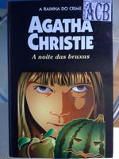

Noite das Bruxas
Hallowe'en Party
A escritora de livros policiais Ariadne Oliver foi convidada para ir a Woodleigh Common, onde uma festa das bruxas ('Halloween') tinha sido organizada para alguns adolescentes, dentre os quais estava uma jovem conhecida por fazer revelações sobre assassinatos e intrigas. Mas quando a garota é encontrada morta dentro de uma tina com maçãs cortadas, Ariadne imagina quão grande teria sido a última revelação que a menina teria feito. Agora, qual dos convidados da festa queria mantê-la calada é uma questão para Hercule Poirot. Mas desmascarar este assassino não será nada fácil, ainda mais que ninguém em Woodleigh Common sequer acreditava que a jovem contadora de histórias tivesse sido assassinada.